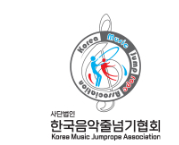
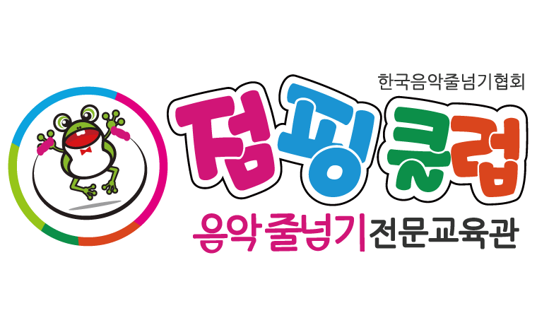
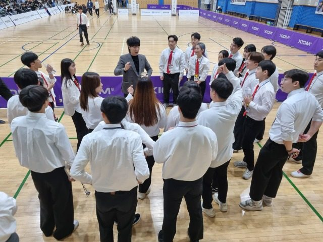
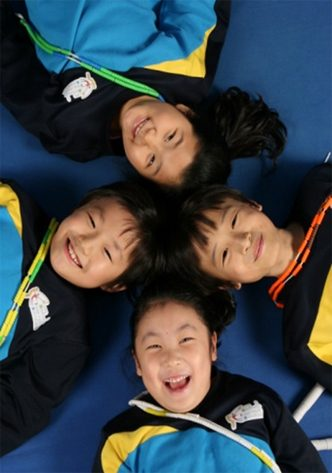
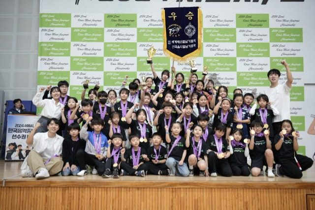
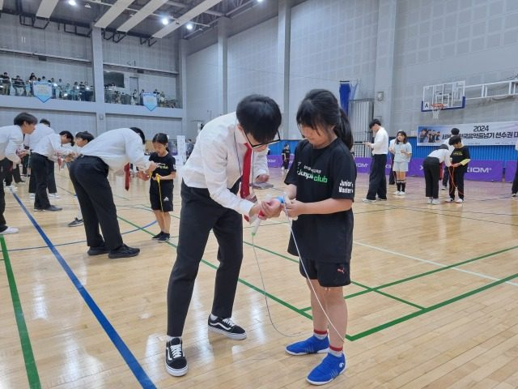

About us
한국음악줄넘기협회 · 세계태권줄넘기협회 · 점핑클럽
한국음악줄넘기협회, 점핑클럽이란?
점핑클럽은 체계적인 급수 교육과 신나는 음악줄넘기가 있는 줄넘기 전문 교육 브랜드입니다. 수준별 맞춤 교육으로 체력과 운동 능력을 키우고, 도전과 성취를 통해 자신감과 협동심을 기릅니다.
음악과 줄넘기가 만나, 운동이 즐거워지다!
음악줄넘기는 음악의 리듬에 맞춰 다양한 줄넘기 기술과 안무를 결합한 스포츠 교육 프로그램입니다. 기초부터 고급까지 수준별 지도가 가능하며, 체력·리듬감·협응력을 기르고 교육·공연·시범 등 다양한 분야에 활용할 수 있습니다.
한국음악줄넘기협회, 점핑클럽 / 줄넘기 급수인증제 | JUMP ROPE CERTIFICATION
남중진 회장이 최초 고안하고 한국음악줄넘기협회가 발전시켜 온 단계별 급수 교육으로, 줄넘기를 단계별로 눈높이에 맞춰 지도하고 익힐 수 있습니다.
태권도와 줄넘기의 콜라보레이션!
태권줄넘기는 줄넘기 기술에 태권도의 차기·막기·지르기 동작을 결합한 융합 스포츠 프로그램으로 남중진 회장이 최초 창안하였습니다. 어린이부터 성인까지 즐겁게 참여하며, 체력 향상은 물론 교육·시범·공연까지 활용할 수 있는 차별화된 스포츠 콘텐츠입니다.
한국음악줄넘기협회 · 세계태권줄넘기협회 · 점핑클럽
사단법인 한국음악줄넘기협회

JUMPING CLUB KOREA
사단법인 세계태권줄넘기협회
점핑클럽 음악줄넘기 전문교육관

HISTORY
전국 대회에서 해외 지회까지
방송과 수상으로 알려진 음악줄넘기
연구회에서 사단법인으로
Our goal
교육을 발전시키며 지도자를 양성합니다.




LOCATION
경기도 수원시 장안구 대평로90번길 19, 310호/320호 (정자동, 라이프스포츠센터)
070-7703-7713 · 팩스 031-601-3125
taekwonrope@hanmail.net
평일 09:00~18:00 (점심 12:20~13:20)